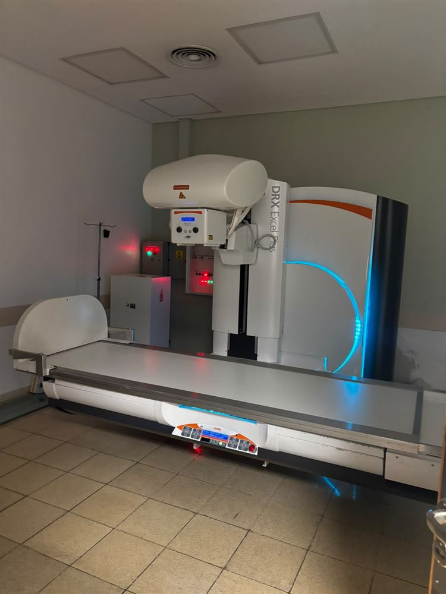

Catálogo público
Necesidades prioritarias
Cada ítem fue pedido por la Dirección del hospital, que también define el orden de urgencia. Ves cuánto cuesta, cuánto ya se compró y cuánto falta. Cada entrega se publica en Transparencia.
Metas y costos según el plan de la Cooperadora (precios de mercado de 2026).
La meta grande
¿Por qué un Arco en C para la guardia?
Hace poco, un paciente joven llegó a la guardia del Penna con un ACV. El equipo lo estabilizó, pero tuvo que ser derivado a otro hospital porque la guardia no cuenta con el equipamiento necesario para continuar el tratamiento.
Un Arco en C vascular permitiría resolver esos casos acá, sin perder tiempo en traslados. Es el objetivo del segundo año de la Cooperadora, con el apoyo de un padrinazgo corporativo.
